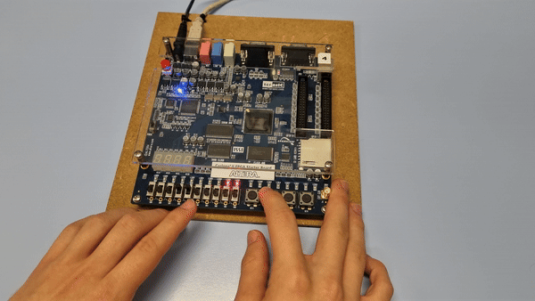

Comparació de 2 operands:
En aquest cas la sortida de la operació es veurà en el display 7 segments de la placa. Les possibles sortides són 3:
- Input0 < Input1: Sortida “rg”
- Input0 == Input1: Sortida “Eq”
- Input0 > Input1: Sortida “Lg”

En aquest cas la sortida de la operació es veurà en el display 7 segments de la placa. Les possibles sortides són 3:
En aquest cas s'utilitzaran els LEDs de color vermell de la placa (10 leds) per mostrar la suma dels 2 operands d'entrada. Per tant serà una suma de nombres binaris i el resultat serà un binari.
En aquest cas s'utilitzaran els LEDs de color vermell de la placa (10 LEDs) per mostrar la resta dels 2 operands d'entrada. Per tant serà una resta de nombres binaris i el resultat serà un binari. En cas de que el resultat sigui negatiu al display 7 segments haurà d'aparèixer un “-”.
En aquest cas el que es pretén es realitzar un desplaçament de l'Input0 “n” posicions. Aquest “n” el definirà l'Input1. Igual que ens els casos anteriors tant les entrades com les sortides seràn en format binari, per les sortides també s'utilitzaran els 10 LEDs vermells de la placa.
En cas de que el codi d'operació no sigui cap dels descrits anteriorment caldrà que el display 7 segments mostri per pantalla “Err”.